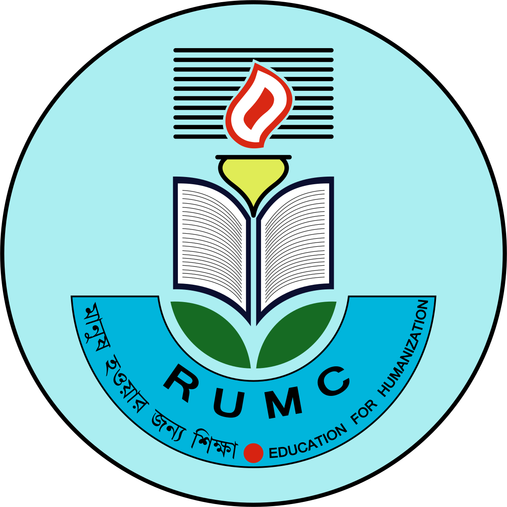
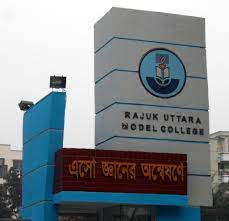

Rajuk Uttara Model College (RUMC) has earned a distinguished place in Bangladesh’s educational landscape through its comprehensive approach to education and student development. Below is a deeper dive into the facilities and what makes RUMC the countries top learning institutions.
Rajuk Uttara Model College (RUMC) was established in 1994 under the Rajdhani Unnayan Kartripakkha (RAJUK) to address the growing educational needs of the expanding Uttara area in Dhaka. Designed to be a model institution, RUMC aimed to set a benchmark for academic excellence with its state-of-the-art facilities and rigorous curriculum. The college quickly gained recognition for its high academic standards and holistic approach to education, becoming one of Dhaka’s leading educational institutions. Over the years, RUMC has maintained its reputation through consistent academic achievements and a commitment to developing well-rounded students, while continuing to evolve with advancements in educational practices and technology.
Over the years, Rajuk Uttara Model College has continued to grow and evolve, maintaining its status as a leading educational institution in Dhaka. The college has adapted to changes in educational needs and technological advancements, continually enhancing its infrastructure and academic programs.
Looking ahead, Rajuk Uttara Model College continues to focus on maintaining and enhancing its standards of education. Plans for future development include incorporating advanced technologies, expanding facilities, and exploring innovative educational practices. The college aims to continue serving as a model institution and contributing positively to the educational landscape of Dhaka.In summary, Rajuk Uttara Model College was established to address the educational needs of a rapidly growing urban area and to set a high standard for secondary and higher secondary education. Through careful planning, investment in infrastructure, and a commitment to academic excellence, the college has become a leading institution in Dhaka, shaping the future of its students and contributing to the community.
 Rajuk Uttara Model College (RUMC) has established itself as a premier educational institution in Dhaka, renowned for its commitment to academic excellence and comprehensive student development. Founded in 1994 under the Rajdhani Unnayan Kartripakkha (RAJUK), the college offers a rigorous curriculum supported by modern facilities and a dedicated faculty, creating an environment conducive to both academic success and personal growth. RUMC’s emphasis on holistic education is reflected in its diverse extracurricular programs and community engagement, which together foster well-rounded, capable students. Its consistent top performance in national examinations and its forward-looking approach to education underscore its role as a model institution, shaping the future of its students and contributing positively to Bangladesh’s educational landscape.